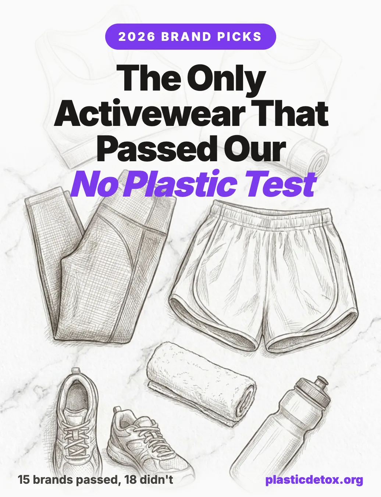

Non Toxic Activewear Brands: 17 That Passed Our Standard, 17 That Didn't (2026)

The 30 Second Summary
- Superwash wool is wool wrapped in plastic. The chlorine Hercosett process coats every merino fiber in polyamide epichlorohydrin resin so it survives the washing machine. The coating sheds in the wash. Cleaner machine washable merino activewear exists using ozone descaling instead of chlorine (Ryker for men). Fully untreated picks: Nero for activewear, Wool and Prince for everyday tees and button ups.
- Recycled polyester sheds the same microplastics as virgin. The carbon math is real (60 percent lower than virgin), but the microfiber math is not. rPET sheds at the same rate, sometimes more.
- Bamboo fabric is rayon made with carbon disulfide. Roughly 99 percent of bamboo clothing is bamboo viscose, processed in an open chemical loop using a known neurotoxin. The FTC has fined major retailers for calling it bamboo.
- We rate on certifications and testing, not on fiber type. The only meaningful certifications are GOTS, Bluesign, and OEKO-TEX. Responsible Wool Standard, USDA BioPreferred, and most brand specific "responsibly sourced" labels do not cover the chemistry. A synthetic brand that holds real certifications passes; a natural fiber brand with none does not.
- Cleanest activewear picks for men: Ryker (ozone descaled merino plus organic cotton, gym focused), Nero (organic cotton with untreated merino liner, zero polyester), Boldwill (TENCEL, hemp, and organic cotton, lab tested PFAS free). Jungmaven for hemp basics, PAKA for outdoor and cold weather.
- Cleanest activewear picks for women: Tripulse (TENCEL plus biodegradable elastane, the best performance pick), MATE the Label MOVE line (92 percent organic cotton, GOTS), Happy Earth (95 percent organic cotton, B Corp). Pact for budget, Girlfriend Collective if you need real compression and four way stretch, LNDR if you want technical gear that lasts. Both are synthetic and both clear the chemical bar, so wash them in a Guppyfriend bag.
- The one combination worth trusting: GOTS certified organic cotton, linen, or hemp, in non stretch cuts. Everything else is a tradeoff dressed up as a solution.
Why "Sustainable Fabric" Claims Deserve Scrutiny
Walk into any activewear store in 2026 and you will be told a story. The leggings are made from recycled ocean plastic. The base layer is merino, machine washable now, very low impact. The t-shirt is bamboo, naturally antimicrobial, soft as cashmere. Each story sounds clean. Each story is technically true. Each story leaves out the chemistry that actually determines whether the fabric is "sustainable" in any meaningful sense.
The greenwashing in textile sustainability happens almost entirely at the fabric label, not the marketing copy. A brand can claim "made from recycled materials" without telling you that the recycled material is polyester, which sheds the same microplastics it did before. A brand can claim "natural merino wool" without telling you the fiber has been coated in synthetic polyamide resin. A brand can claim "bamboo fiber" without telling you that the bamboo plant was dissolved in carbon disulfide before any fiber was made. The Federal Trade Commission has taken enforcement action against several retailers for the bamboo claim specifically, but the broader pattern is everywhere in the category.
This article covers the three materials that show up most often in low tox shopping searches and that are most consistently misrepresented: superwash wool, recycled polyester (rPET), and bamboo viscose. For each, we cover how the fabric is made, what is actually in it, what it sheds, and what (if anything) the relevant certifications cover. Where there is a meaningfully cleaner version, we name it. Where there is not, we say so.
A note on scope: this is not a guide to luxury sustainable fashion. It is a guide to what is realistically buyable for someone trying to lower their plastic and chemical exposure without spending $200 on a t-shirt. The fabric chemistry sections apply to all clothing, but the brand recommendations are focused on activewear (leggings, sports bras, gym shorts, base layers, athletic tees), since that is the category where these three materials show up most aggressively and where readers most often ask for cleaner picks. Everyday tees, sleepwear, and bedding are covered in a closing paragraph. We focus on brands and certifications that are verifiable, with picks split clearly between men's and women's options.
- How is it made? What chemicals enter the process, and where do they go?
- What is in the finished fiber? What residues, coatings, or treatments stay in the garment?
- What does it shed? In the wash, in the dryer, against your skin?
- What happens at end of life? Does it biodegrade, recycle, or pollute indefinitely?
Why Synthetic Activewear Matters for Your Body
Most articles in this space stop at "microplastics, bad." That framing skips the part that actually matters for activewear specifically: synthetic athletic clothing is the single worst combination of plastic against your body for hours at a time, plus sweat, plus heat, plus friction. Each of those amplifies how much chemical leaches out of the fabric and into you. Below is what the published research actually shows.
The chemicals hitching a ride in synthetic activewear
The polyester, nylon, and spandex in athletic wear is rarely pure polymer. Manufacturing routinely adds, or leaves behind, a mix of:
- BPA (bisphenol A). Used as a polymerization aid in polyester and as a monomer in elastane. The Center for Environmental Health's 2022 testing found sports bras and athletic shirts from Athleta, Nike, FILA, PINK, Asics, The North Face, Brooks, All in Motion, Mizuno, New Balance, and Reebok shedding BPA at up to 22 times California's Prop 65 safe daily exposure limit for skin contact. A separate CEH investigation found BPA in over 100 sock brands, including styles made for infants. BPA is a well documented endocrine disruptor that mimics estrogen.
- PFAS ("forever chemicals"). Applied as durable water repellent (DWR) and stain repellent coatings, common on sweat wicking and outerwear synthetics. Mamavation's independent EPA certified lab testing has flagged organic fluorine in leggings and yoga pants from several mainstream brands. PFAS are linked to reduced fertility, thyroid disruption, and immune effects.
- Phthalates. Plasticizers used in elastane and printed graphics. DEHP, the most common, is classified as a reproductive toxicant in California and the EU.
- Antimony. A heavy metal catalyst left over from polyester polymerization. Concentrations increase in recycled polyester because each recycling cycle concentrates it.
- Flame retardants, antimicrobial silver, azo dyes. Each adds another class of chemicals to the surface or interior of the fabric.
How these chemicals get into your body
The exposure route most people picture (microplastic particles physically crossing intact skin) is the route with the least evidence behind it. The route with the strongest evidence is different and more concerning: chemical additives leach out of synthetic fabric into sweat, and the sweat then carries those chemicals across the skin barrier.
The clearest experimental demonstration is a 2024 study by Wong, Abdallah, and Harrad published in Environment International. The researchers used 3D human skin equivalent models exposed to polyethylene and polypropylene microplastics containing flame retardant additives. Over 24 hours, up to 8 percent of the chemical load crossed the skin barrier into the bloodstream model, and sweaty (hydrated) skin absorbed significantly more than dry skin. The University of Birmingham summarized the result plainly: synthetic sweat leaches chemicals out of microplastics, and the skin absorbs them.
The mechanism is straightforward chemistry. Sweat contains oils. Oils are lipophilic. Lipophilic solvents pull lipophilic chemicals (BPA, phthalates, PFAS, plasticizers) out of plastic polymers and dissolve them. Hydrated skin is also more permeable than dry skin. Wearing a synthetic sports bra during a 45 minute workout creates exactly this combination: warm skin, open pores, sweat soaked plastic against tissue.
A separate 2016 study (Morrison et al., Environmental Science & Technology) measured phthalate uptake from clothing in human participants and found that ignoring clothing covered body areas would underestimate total dermal absorption by a factor of 2 to 5. Clothing does not block dermal exposure. For lipophilic chemicals like DEHP, clothing in close contact increases it.
What the fertility and hormone research actually says
This is the area where readers most often want a clean answer and where the science demands a careful one. The strongest evidence is for the chemicals carried by synthetic fabric, not for the fabric itself in isolation.
- PFAS and sperm quality. Multiple 2024 and 2025 studies, including a peer reviewed analysis in Environmental Science & Technology measuring PFAS in semen samples from a fertility clinic cohort, found that several PFAS species (PFOS, PFOA, PFHxS, 6:2 Cl-PFESA) are significantly associated with decreased sperm motility and viability. A 2025 meta analysis in the same journal extended the finding to broader male reproductive endpoints.
- PFAS and female fertility. A 2023 study tracked over 1,000 women trying to conceive and found higher serum PFAS concentrations associated with up to a 40 percent reduction in conception rates within 12 months.
- PFAS exposure during pregnancy. Maternal PFAS exposure in early pregnancy is associated with decreased sperm quality in adult male offspring (so the effect can carry across a generation).
- BPA. Estrogen mimicking endocrine disruption is well established in animal models and human cohort studies. Lower doses produce non monotonic dose response curves, which means very low exposures can have measurable effects.
- Phthalates. DEHP is associated with early menopause, decreased pregnancy odds, preterm birth, low birth weight, and decreased sperm quality across multiple population studies.
None of the activewear specific studies estimate "your sports bra lowered your sperm count by X percent." That kind of single garment dose response data does not exist yet. What exists is converging evidence on three points: (1) the chemicals in synthetic activewear include known reproductive and endocrine toxicants, (2) those chemicals leach into sweat and cross skin, and (3) population level exposure to those same chemicals is linked to measurable fertility and hormone effects. Synthetic activewear is not the only source, but a daily wardrobe of polyester sports bras and spandex leggings worn for hours is a meaningful contributor to total body burden.
Brand Tiers for Activewear
If you scrolled here for the picks, this section is for you. Below is the honest summary of the 17 brands worth knowing, organized by what each is actually best for. None of these brands paid to be listed. Each brand links to its direct site. The chemistry behind why some materials passed and others did not is covered in the parts that follow.
We rate clothing on certifications and independent test results, not on whether the fiber is natural. The question a verdict has to answer is what ends up in your body, and for clothing that means the chemistry: PFAS, BPA, phthalates, azo dyes, and finishing treatments. A brand that holds OEKO-TEX Standard 100, Bluesign, or GOTS and publishes testing can pass on those grounds even if the fabric is synthetic. A brand with no certifications does not pass, whatever its recycled content story.
Shedding is a separate question, and we treat it separately. Synthetic fabric releases microplastic fibers in the wash. That is a water and environment problem rather than a reason to fear wearing the garment, and it has a fix that works: a Guppyfriend bag. So we flag it where it applies rather than downgrading a brand for it.
One thing worth knowing before you shop on composition alone: how a fabric is built matters more for shedding than what it is made of. Polyester fleece sheds on the order of 7,360 fibers per square metre per litre in a single wash. Plain polyester knit sheds around 87. That is an 85 fold gap within the same fiber, driven by construction. Tightly knit and woven fabrics shed far less than fleece and loose knits.
| Brand | Best For | Fiber | Certifications | Men / Women |
|---|---|---|---|---|
| Ryker | Gym, natural fiber performance | Organic cotton, ozone descaled merino wool | GOTS, OEKO-TEX, independent lab tested | Men |
| Nero | Gym, zero polyester performance | Organic cotton + untreated merino liner | RWS merino, organic cotton | Both |
| Tripulse | Performance, minimal compromise | TENCEL Lyocell + recycled biodegradable elastane | OEKO-TEX Class 1, Bluesign, GOTS | Both |
| Boldwill | Performance, natural fiber | TENCEL Lyocell, hemp, organic cotton | GOTS, Bluesign, OEKO-TEX, PFAS/BPA/AZO free tested | Both |
| Sports Organics | Gym + everyday | Organic cotton, merino wool | GOTS, OEKO-TEX | Both |
| Natasha Tonic | Yoga, pilates, swim | Hemp + GOTS organic cotton + 4% lycra | GOTS dyes, Ecocert fabric | Women |
| Happy Earth | Everyday, light to moderate workouts | 95% organic cotton + 5% elastane | GOTS, B Corp, Climate Neutral, Fair Trade | Both |
| MATE the Label | Yoga, pilates, athleisure | 92% organic cotton + 8% spandex | GOTS, Climate Neutral | Women forward |
| Purusha People | Yoga, pilates | TENCEL Lyocell + CREORA elastane | Polyester free, TENCEL sourced | Women |
| Lezat | Everyday, yoga | Organic cotton + elastane | Organic cotton focused | Women |
| 1 People | Athleisure, light activity | Organic cotton blend | Polyester free | Both |
| Pact | Everyday, low impact, budget | Organic cotton | GOTS, Fair Trade | Both |
| Jungmaven | Light activity, basics | Hemp + GOTS organic cotton | GOTS, made in USA | Both |
| PAKA | Outdoor, cold weather | Alpaca, organic cotton | OEKO-TEX, B Corp | Both |
| Girlfriend Collective | Compression, four way stretch | rPET + spandex | Bluesign, OEKO-TEX, PFAS free verified | Women |
| LNDR | Technical performance, durability | Recycled polyamide, Amni Soul Eco, some GOTS cotton | OEKO-TEX Standard 100, BPA free | Women |
| Patagonia | Outdoor, shells, cold weather | Recycled polyester and nylon, some organic cotton | Bluesign System Partner, Fair Trade, PFAS free as of 2025 | Both |
Cleanest natural fiber for the gym
- Ryker. The most straightforward option for men. 100 percent organic cotton plus merino wool that is descaled with ozone (chlorine and Hercosett free, GOTS compliant). The merino is therefore machine washable without the synthetic resin coating, with the trade off being 4 to 7 percent shrinkage in the first 1 to 2 washes per the brand's published testing. No polyester or plastic based fabrics anywhere in the line. Independent third party lab testing for BPA, PFAS, and phthalates on top of GOTS and OEKO-TEX Standard 100. Built specifically for gym use, which is rare in this category.
- Nero. Organic cotton outer shell with an untreated 17.5 micron merino wool liner, structured for gym work with zero polyester anywhere in the garment. Merino sourced and produced in New Zealand. Both men's and women's.
- Boldwill. TENCEL Lyocell, hemp, and organic cotton blends (formerly Iron Roots). GOTS organic cotton from Greece and Turkey, FSC certified TENCEL from European eucalyptus and beechwood. Independent PFAS, BPA, and azo dye free lab testing. Performance focused without using synthetic fibers.
- Sports Organics. GOTS and OEKO-TEX Standard 100 certified. Organic cotton workout sets plus merino pieces for temperature regulation. Retro aesthetic, priced toward accessible. Both men's and women's.
Performance with minimal compromise
- Tripulse. Probably the most technically impressive low tox performance brand right now. Eucalyptus based TENCEL Lyocell with OEKO-TEX Class 1 certification (the highest tier, rated safe for infant skin). Uses ROICA V550 biodegradable elastane (Cradle to Cradle Material Health Gold) or ROICA EF385 recycled elastane instead of conventional spandex. Designed in Sweden, made in Portugal. Both men's and women's.
Yoga, pilates, athleisure
- Natasha Tonic. Hemp plus GOTS organic cotton plus 4 percent lycra, sewn and dyed in Los Angeles. Notable for being one of the only low tox swim and yoga crossover lines. Ecocert certified fabric, GOTS certified dyes. Women's only.
- Purusha People. Siro spun TENCEL Lyocell with Creora bio based spandex (not conventional elastane). Made in Los Angeles, GOTS certified low impact dyes. Yoga and pilates focused, polyester free. Women's only.
- MATE the Label (MOVE line). 92 percent organic cotton, 8 percent spandex. Free from PFAS, toxic dyes, pesticides, and screened endocrine disruptors. GOTS certified. Climate Neutral certified. Women forward but unisex basics available.
- Happy Earth. 95 percent organic cotton, 5 percent elastane, non toxic dyes. B Corp (score 91.4), Climate Neutral, Fair Trade, 1% for the Planet. The most decorated brand on certifications in the everyday tier. Both men's and women's.
- Lezat. GOTS certified organic cotton with elastane, manufactured in house in Los Angeles. Free of BPA, PFAS, azo dyes, and synthetic chemical finishes. Yoga and everyday focused. Women's only.
- 1 People. Danish slow fashion label using TENCEL, linen, and organic cotton. Athleisure and light activity within a broader minimalist line. Fair trade production. Both men's and women's.
Everyday and light activity basics
- Pact. Carbon neutral, GOTS certified, PFAS free, 100 percent organic cotton, Fair Trade. Leggings starting around $34. The best budget pick. Best for low to moderate intensity rather than heavy performance use.
- Jungmaven. Hemp plus GOTS organic cotton, made in the USA. The best plant fiber pick for tees and basics. Light activity rather than performance. Both men's and women's.
Natural fiber for outdoor and cold weather
- PAKA. Traceable alpaca fiber and organic Pima cotton, processed without toxic dyes. Each garment carries a QR code that traces the fiber back to the specific farm. Exceptional for outdoor activity and cold weather where merino would otherwise be the default (and where most merino is superwash). Both men's and women's.
High performance synthetics that clear the chemical bar
These two are synthetic and they shed, but they pass on the measure that governs what gets into your body, and they do things natural fiber blends genuinely cannot. Compression, four way stretch, and abrasion resistance are real requirements, and a nylon garment that lasts five years beats a cotton one you replace twice. Wash either in a Guppyfriend bag and the shedding is largely handled.
- Girlfriend Collective. The best pick if you need compression and four way stretch. Bluesign certified, PFAS free verified, OEKO-TEX Standard 100, which is the deepest certification stack of any synthetic brand here. Bluesign matters more than most people realise: it audits the chemical inputs going into the factory, not just the fabric coming out. It is rPET with spandex, so it is not plastic free and it sheds in the wash. Also available on Amazon.
- LNDR. London brand founded in 2015, and the most durable option on this list. OEKO-TEX Standard 100 across the fabrics, which has restricted PFAS and total organic fluorine since 2023, plus BPA free stated on the product pages. That second claim matters given the Center for Environmental Health found BPA at up to 22 times the Prop 65 limit in sports bras from brands that make no such commitment. Most of the range is recycled polyamide; the seamless line uses Amni Soul Eco polyamide and some styles blend GOTS certified organic cotton. No recalls or product litigation. One claim to read carefully: Amni Soul Eco is marketed as biodegrading within five years in landfill conditions, which describes disposal in a specific anaerobic environment, not what happens while you wear and wash it.
- Patagonia. Moved onto this list in 2026, and the reason is worth stating plainly, because we had it on the excluded list before. Patagonia completed its decade long PFAS phase out in spring 2025, so 100 percent of new products are made without intentionally added PFAS, and it has been a Bluesign System Partner since 2007, the first brand to join. Under a standard that rates certifications and testing rather than fiber type, that is a pass. The fabric is still mostly recycled polyester and nylon and it still sheds. One caveat on the marketing rather than the chemistry: a French advertising ethics jury upheld a complaint that its recycled nylon advertising overstated the environmental benefit, which is exactly the kind of claim this article exists to scrutinise.
Brands That Did Not Make the List
The activewear sustainability landscape includes a lot of brands that market a green story without the underlying chemistry to back it up. The reasons below are not character judgments, and none of them is simply that the fabric is synthetic. They are specific gaps in certification, published chemical commitments, or independent testing. We do not link these brands here because we do not recommend them.
| Brand | Why it did not make the list |
|---|---|
| Lululemon | 100 percent synthetic fabrics, PFAS flagged in independent testing, no natural fiber lines. |
| Alo Yoga | Synthetic fabrics throughout, fashion first not low tox, no GOTS or PFAS free commitment. |
| Icebreaker | Merino sourcing is strong (RWS, ZQ) but no explicit non superwash confirmation across the range. |
| Oner Active | Primarily polyester and nylon, no GOTS, no published PFAS free commitment or independent testing. |
| Quince | GOTS and OEKO-TEX certifications apply to only a small fraction of products, no supply chain transparency. |
| BAM | B Corp certified, but the primary fabric is conventional bamboo viscose (carbon disulfide process), not lyocell. |
| NIKIN | GOTS covers only part of the range, with no line wide PFAS or BPA commitment and no published independent testing. |
| Poplinen | TENCEL Lyocell fiber is clean but insufficient public certification data on finished garments. |
| ISTO Active | Merino wool activewear with good sustainability credentials, but superwash treatment status unconfirmed. |
| Adidas x Parley | rPET recycling narrative, but still 100 percent polyester, no Bluesign across the board, no PFAS commitment. |
| Gymshark | Fast fashion adjacent, synthetic fabrics only, no meaningful certifications. |
| Vuori | Lifestyle first synthetic brand, no natural fiber focus, no PFAS or BPA commitments. |
| Rhone | Synthetic performance fabrics, GoldFusion anti odor treatment not independently verified as non toxic. |
| Ten Thousand | 100 percent synthetic, performance focused, no certifications relevant to low tox. |
| Sweaty Betty | Primarily synthetic, no GOTS or PFAS free commitment. |
| Beyond Yoga | Synthetic fabrics, no relevant certifications. |
| Outdoor Voices | Some recycled materials, but no natural fiber focus or PFAS testing. |
For loungewear, sleepwear, and non activewear basics, the cleanest direct to consumer options are Organic Basics (GOTS organic cotton everyday wear from Copenhagen), Ettitude (CleanBamboo lyocell, closed loop NMMO process), and Coyuchi (GOTS organic cotton sheets, towels, sleepwear, full annual supply chain audit). For untreated merino, Wool and Prince remains the cleanest realistic option.
Part 1: Superwash Wool
What it is and why it's popular
Untreated wool has microscopic scales on the outside of every fiber. The scales lock together when agitated in hot water, which is what produces felting and shrinkage. For most of human history, this meant wool needed to be hand washed or dry cleaned. Then in the 1970s, the chlorine Hercosett process arrived: a way to chemically smooth those scales so wool could survive the washing machine.
Today, the overwhelming majority of merino wool sold for activewear, base layers, socks, and baby clothing is superwash. The word almost never appears on the front of the garment. It is encoded in the phrase "machine washable wool," which is now the default rather than the exception. Brands using it include Icebreaker, Smartwool, most major sock brands (Darn Tough, Bombas, People Socks), and many Patagonia merino lines. Patagonia uses ZQ Merino with the chlorine Hercosett process for its core Capilene merino, and reserves untreated wool for its Capilene Air range.
How it's made (and why that matters)
The chlorine Hercosett process is a two step chemical treatment:
- Chlorination. Raw wool is bathed in acidic chlorine to partially dissolve the outer cuticle scales. The chlorine forms reactive intermediates that bond with the wool protein and oxidize the scale edges, leaving them flattened and unable to interlock during washing.
- Resin coating. The chlorinated wool is then coated in Hercosett 125, a cationic polyamide epichlorohydrin resin. This is a synthetic polymer. The resin cross links onto the fiber surface and forms a continuous coating roughly 100 to 200 nanometers thick. The coating is what actually prevents felting.
The relevant chemistry here is that every fiber of superwash wool is wrapped in plastic. Hercosett 125 is a thermosetting polymer with the chemical formula based on polyamine epichlorohydrin chemistry. It is the same family of resins used to make paper towels stay strong when wet. It is not natural. It is not biodegradable on any meaningful timescale. And it does not stay on the fiber forever.
The process also has documented water and worker safety problems. Chlorinated organic compounds (AOX) appear in superwash wastewater at levels regulated in the EU. PFAS contamination has been documented at multiple superwash facilities, primarily as a byproduct of stain repellent or water repellent finishes applied to the same fabric. Unreacted epichlorohydrin, a probable human carcinogen classified by the IARC as Group 2A, has been detected in process effluent at some plants.
The microplastic and chemical problem
The polyamide epichlorohydrin coating sheds. A 2020 study in the journal Environmental Pollution examined wash water from superwash and untreated wool garments and found that superwash released significantly more resin and fiber fragments per cycle than untreated wool. The shed material is not the protein wool fiber underneath. It is the synthetic coating. So a garment marketed as natural wool is releasing synthetic polymer particles into wastewater every time it is washed.
Untreated wool also sheds, but it sheds keratin protein fibers that biodegrade in soil and water over weeks to months. Synthetic resin fragments persist for decades.
The comparison is roughly:
- Untreated merino: sheds keratin fibers, biodegradable, no synthetic residue.
- Superwash merino: sheds keratin fibers plus polyamide epichlorohydrin polymer particles. May carry residual chlorinated organics and (variably) PFAS or epichlorohydrin depending on the facility.
What the certifications miss
This is the place where wool certifications most consistently fall short.
- OEKO-TEX Standard 100 tests the finished garment for residual chemicals at a defined detection limit. It does not prohibit the chlorine Hercosett process. A superwash garment can be OEKO-TEX Standard 100 certified.
- ZQ Merino is a New Zealand wool sourcing standard covering animal welfare, environmental land management, and traceability. It says nothing about how the wool is processed downstream.
- Responsible Wool Standard (RWS) covers similar farm level criteria. RWS certified wool is routinely sold as superwash.
- Bluesign would be the relevant standard, because it does govern chemical inputs throughout production. But Bluesign is rarely applied to wool, and "Bluesign approved" on a wool garment usually refers to the synthetic stretch fiber blended into it, not the wool itself.
- GOTS can apply to wool, and GOTS does prohibit chlorine bleaching and most synthetic resin treatments. GOTS certified wool is therefore very unlikely to be superwash. The challenge is that GOTS certified wool is rare in the activewear category.
The third option: chlorine free machine washable processes
The article so far has framed the choice as binary: chlorine Hercosett superwash (treated, machine washable, sheds plastic) versus fully untreated (clean, hand wash only, will felt if mistreated). That framing skips a third category that has matured in the last few years: chlorine free descaling processes that still produce machine washable wool without the polymer coating. Three are in production at commercial scale.
- Ozone treatment. Ozone gas (O3) gently oxidizes and smooths the scale edges of the wool fiber. The only byproducts are oxygen and water, no chlorinated organics, no resin coating, no PFAS. The trade off is that machine washability is partial rather than total: Ryker's published shrinkage testing reports 4 to 7 percent shrinkage after the first 1 to 2 washes on its ozone treated merino, after which the fiber stabilizes. Patagonia uses an ozone only process on some of its merino lines as well.
- Naturetexx Plasma. Developed by the Südwolle Group, the Naturetexx process uses air and electricity to create a plasma that alters the friction profile of the wool fiber surface, removing the felting tendency without any chemical bath. The process is Bluesign approved and compatible with GOTS certification.
- EXP process. Developed by the Schoeller Spinning Group, the EXP process replaces chlorine with naturally derived salts. Smaller distribution than ozone or Naturetexx, but a third path that avoids chlorinated organic byproducts.
These processes are not perfect. Ozone treated wool shrinks a little. Naturetexx and EXP are not as cheap as Hercosett and so far show up mostly in smaller, low tox positioned brands rather than mass market activewear. But they are real, GOTS compatible, and shed no polymer coating. If a brand offers machine washable merino and explicitly states one of these processes, that is the cleanest realistic option for activewear use.
What to look for on the label
- Avoid: "machine washable wool," "tumble dry," "easy care merino," "superwash." Without further qualification, these are almost always synonyms for chlorine Hercosett treatment.
- Prefer (fully untreated): "untreated," "non superwash," "hand wash," or "wool cycle only." These usually indicate no descaling at all, so no polymer coating.
- Prefer (chlorine free machine washable): "ozone treated," "ozone descaled," "Naturetexx Plasma," "EXP process," or "GOTS certified machine washable wool." Brands using these processes almost always say so prominently because it is a marketing differentiator.
- Use a wash bag anyway. Even untreated wool sheds keratin fibers. A Guppyfriend bag reduces overall fiber loss and protects the garment.
Part 2: Recycled Polyester (rPET)
Why it sounds like a win
The narrative is irresistible: plastic bottles get rescued from the waste stream, melted down, and respun into yarn. A pair of leggings can keep 8 to 12 PET bottles out of landfill. Adidas has built an entire product line, Parley for the Oceans, around this story. Patagonia, Allbirds, H&M, and dozens of other brands now use rPET as a default sustainability claim.
And the carbon math is real. Producing rPET emits roughly 60 percent less CO2 than producing virgin polyester, because the polymerization step (which is highly energy intensive) is skipped. Less crude oil is pulled into the system. Less new plastic is manufactured. The bottle that was going to landfill instead becomes a garment.
But the framing assumes that "carbon footprint" and "sustainable" mean the same thing. For microplastic pollution, plastic in food, and PFAS in clothing, they do not.
The problems recycled polyester doesn't solve
Microplastic shedding. rPET sheds in the wash. The fiber is still polyester. The molecular structure that makes polyester strong and stretchy is identical whether the input was a crude oil derivative or a recycled bottle. The peer reviewed work on this is small but consistent: Özkan and Gündoğdu (2021), Environmental Pollution compared rPET and virgin polyester yarns under standardized agitation and found no statistically significant difference in microfiber release per unit mass. Some industry adjacent testing has reported rPET shedding modestly higher than virgin in mechanically recycled fiber, attributed to shorter staple length and lower tenacity after recycling, but this finding is not yet replicated in independent peer review. The defensible takeaway: rPET sheds at roughly the same rate as virgin polyester, and any claim of a microplastic advantage from "recycled" is not supported by the current evidence.
For more on how synthetic shedding works, see our deep dive on microplastics in clothing and laundry.
Chemical contamination carryover. Bottles intended for food contact go through strict polymer specifications. Recycled polyester that ends up in clothing does not. Antimony, a heavy metal used as a polymerization catalyst, accumulates in rPET fiber at higher concentrations than in virgin polyester (because each recycling cycle concentrates it). Phthalates and other plasticizers can transfer from contaminated source bottles. Independent testing by the Center for Environmental Health has flagged elevated antimony in some rPET activewear samples.
Mechanical vs chemical recycling. Most rPET on the market is mechanically recycled: bottles are shredded, melted, and respun. This preserves the polymer but degrades the fiber quality. Chemical recycling (depolymerization back to monomers) produces virgin equivalent fiber but is more energy intensive and rare. Most "recycled polyester" claims do not specify which process was used. The Eastman Naia and the new Renewcell Circulose offerings use closed loop processes that approach true textile to textile recycling, but these are still niche.
The PFAS problem in activewear specifically
Per and polyfluoroalkyl substances (PFAS) are the "forever chemicals" used to make fabrics water repellent, stain repellent, and wrinkle resistant. They are not exclusive to recycled polyester, but they have been disproportionately found in activewear, where durable water repellent (DWR) coatings are common.
Mamavation, an independent consumer testing project, has commissioned EPA certified lab testing on dozens of activewear brands since 2022. The methodology screens for total organic fluorine using particle induced gamma ray emission (PIGE) spectroscopy, which detects the presence of fluorinated compounds but does not quantify individual PFAS species. In one 2022 testing round of leggings and yoga pants, detectable organic fluorine appeared in samples from several mainstream activewear brands. Some implicated brands have since published PFAS exclusion policies or disputed the findings on methodology grounds (Lululemon publicly contested its result and committed to eliminating PFAS in subsequent statements). Samples from Girlfriend Collective and a handful of natural fiber brands came back below the lab's detection threshold in the same round. Treat the dataset as a directional signal, not a definitive ranking, and check current brand commitments before buying.
The takeaways from this body of testing:
- "Recycled polyester" is not a PFAS claim. rPET and PFAS are independent variables. A garment can be 100 percent rPET and still have a fluorinated DWR coating.
- "PFAS free" is now a verifiable commitment. Brands like Girlfriend Collective, Patagonia (as of 2025), and Pact have published PFAS exclusion policies. Lululemon committed to eliminating PFAS by 2026 after the testing controversy.
- Bluesign approval is a strong PFAS signal. The Bluesign chemical inventory excludes most regulated PFAS compounds. A Bluesign approved synthetic fabric is far less likely to contain fluorinated finishes.
How the major rPET brands compare on chemistry
The recommended rPET pick is in the Brand Tiers above. What is useful to add here is how the major rPET marketing brands actually differ on the underlying chemistry, since this is where the marketing diverges most sharply from the lab data.
Girlfriend Collective is the only major rPET activewear brand with all three: Bluesign certification, OEKO-TEX Standard 100, and a published PFAS free commitment confirmed in third party testing. The fabric is 79 percent recycled polyester (the brand cites roughly 25 PET bottles per pair of Compressive leggings) plus 21 percent spandex, with a take back program for end of life. Patagonia committed to full PFAS elimination as of late 2025 and co funded development of the Guppyfriend bag, but still ships primarily synthetic next to skin pieces. Adidas x Parley has the most aggressive recycled ocean plastic marketing claim and the weakest underlying chemistry: the fabric is still 100 percent polyester with no Bluesign certification across the board.
The end of life problem no one talks about
Even when rPET enters a garment, that garment usually cannot be recycled again. Garments are typically dyed, blended with elastane, and stitched with polyester thread. Textile to textile recycling for blended fabrics is still a research stage process at industrial scale. Some pure rPET pieces can be reprocessed (Girlfriend Collective's take back program does this for compatible items), but the broader market remains effectively linear: bottle to garment to landfill.
The honest ceiling of rPET as a "solution":
- It reduces virgin polyester demand by extending the use phase of plastic that already exists.
- It does not reduce microplastic shedding during the use phase.
- It does not enable textile circularity in most cases, because the end product is rarely recyclable again.
- It is a one step delay in the plastic waste stream, not an exit from it.
Part 3: Bamboo Viscose (a.k.a. Bamboo Rayon)
The bamboo plant vs the bamboo fabric problem
Bamboo as a crop is genuinely low impact. Some species (notably Moso and giant timber bamboo) can grow up to a meter per day under optimal tropical conditions, which is the source of the often repeated "fastest growing plant on earth" claim. More importantly, bamboo requires minimal irrigation in suitable climates, sequesters carbon comparably to fast growing hardwood, and regenerates from the root system without replanting. If you could turn bamboo stalks into fabric the way you turn cotton bolls into fabric, bamboo would be one of the cleanest fibers on the planet.
You cannot. Bamboo fiber is not naturally suitable for soft fabric. The bamboo plant is woody and stiff. The only commercial process for turning bamboo into the soft, drapey fabric sold in stores is to chemically dissolve the plant, which makes it functionally identical to rayon from any other wood source.
The Federal Trade Commission has been explicit about this. In 2009 the FTC fined four major retailers (Macy's, Sears, Kmart, and Leon Max) for marketing rayon products as bamboo. In 2010 the FTC sent warning letters to 78 additional retailers. In 2022 and 2023 the agency issued updated guidance that "any product made from bamboo that has been chemically processed must be called rayon or rayon made from bamboo, not bamboo." Kohl's, Bed Bath and Beyond, and Walmart have all settled FTC bamboo claims since.
How viscose is made
Conventional viscose production (which includes most bamboo fabric) works like this:
- Cellulose extraction. Bamboo stalks are chipped and dissolved in sodium hydroxide (caustic soda), producing alkali cellulose.
- Xanthation. The alkali cellulose is treated with carbon disulfide to produce cellulose xanthate, a sticky orange solution.
- Spinning. The xanthate solution is pushed through tiny holes (spinnerets) into a sulfuric acid bath, which regenerates the cellulose as fiber.
- Washing and finishing. The fiber is washed, bleached (often with chlorine), and dried.
The critical chemical is carbon disulfide. It is a known neurotoxin with documented occupational health effects, including peripheral neuropathy, cardiovascular disease, and reproductive harm in viscose factory workers. The EPA classifies it as a hazardous air pollutant. In open loop viscose plants (the standard in most of the global supply chain), only 50 to 70 percent of carbon disulfide is recovered, and the rest is released to air and water.
Lyocell is the closed loop alternative. Brand named TENCEL when made by the Austrian firm Lenzing, lyocell uses N methylmorpholine N oxide (NMMO) as the solvent. NMMO is far less toxic, and lyocell production recovers more than 99 percent of the solvent in a closed loop. The fiber that comes out is chemically similar to viscose but the process is dramatically cleaner.
Most "bamboo" clothing on Amazon and in fast fashion is conventional viscose. Lyocell from bamboo is rare and almost always labeled explicitly as "bamboo lyocell" or "bamboo TENCEL." If the label just says "bamboo" or "bamboo viscose," it is the conventional, open loop carbon disulfide process.
What's left in the fabric
Residual carbon disulfide in finished viscose fabric is generally below detection thresholds in the finished consumer product. The worker exposure problem is upstream, at the factory. The end product is mostly regenerated cellulose, which is chemically similar to cotton or rayon and biodegradable.
What you should care about as a consumer:
- OEKO-TEX Standard 100 certification tests the finished fabric for residual chemicals, including formaldehyde, AOX, and heavy metals. A bamboo viscose garment with OEKO-TEX Standard 100 has been screened for these residues.
- USDA BioPreferred is a federal label indicating the percentage of biobased content. It does not address how the fiber was processed and is not a sustainability or chemical safety standard.
- FSC certification on bamboo fabric is rare and indicates responsible sourcing of the bamboo plant itself.
- "Bamboo charcoal" fabric claims are usually marketing. The claim refers to a small amount of bamboo charcoal powder added to viscose or polyester fiber, with claims of odor absorption or far infrared emission. The scientific basis for the wearable claims is weak.
Brand breakdown
Boody is the most accessible bamboo viscose brand on Amazon. The fabric is OEKO-TEX Standard 100 certified bamboo viscose with elastane, which means the finished garment has been screened for residual chemicals against OEKO-TEX limits. Boody markets its viscose as produced under closed loop principles, but the company has not published independently audited solvent recovery rates or named the certifying body, so the process side of the claim is not externally verified. The OEKO-TEX certification on the finished product is real and is the strongest reason to prefer Boody over generic Amazon bamboo. It is still not lyocell.
Ettitude uses CleanBamboo, a proprietary lyocell process applied to bamboo. The carbon disulfide problem is replaced by NMMO closed loop processing. Sheets, sleepwear, and underwear. Direct to consumer rather than Amazon.
Cariuma and similar fashion brands using bamboo in fabric blends are usually conventional viscose. Read the materials list carefully. "Bamboo" without "lyocell" or "TENCEL" means open loop viscose.
When bamboo fabric is actually a reasonable choice
Lyocell bamboo, with OEKO-TEX Standard 100 or MADE IN GREEN certification, is a meaningfully cleaner choice than conventional viscose. It is also softer than cotton, drapes well, and is genuinely biodegradable. For loungewear, sleepwear, and underwear where moisture wicking matters and you do not need stretch performance, certified bamboo viscose is reasonable. For activewear that needs significant stretch, the unavoidable elastane content (5 to 15 percent) makes bamboo less of a win.
Part 4: Other "Sustainable" Materials Worth Scrutinizing
Organic cotton in activewear
Cotton itself is one of the cleanest fibers when grown organically. GOTS certification covers the entire supply chain from field to finished garment, prohibits genetically modified seeds, restricts synthetic dyes and finishes, and excludes most problematic processing chemicals. The catch with activewear is that pure cotton has no stretch. To produce a legging or sports bra, brands blend cotton with elastane (also called spandex or Lycra), which is a polyurethane synthetic.
A "GOTS certified organic cotton legging" is typically 88 to 95 percent organic cotton and 5 to 12 percent elastane. GOTS allows up to 10 percent synthetic content in performance categories. The remaining percentage still sheds microplastics. The fabric is cleaner than 100 percent polyester, but it is not plastic free.
For non stretch cuts (woven tees, button ups, pajamas, sheets), GOTS organic cotton can be effectively plastic free. For stretch cuts, the cleanest blend will still have a small synthetic percentage. The recommended organic cotton activewear picks (Pact, MATE the Label, Happy Earth) are in the Brand Tiers above.
TENCEL Lyocell
Lyocell deserves a callout outside the bamboo context. TENCEL is a brand name for lyocell made by Lenzing from eucalyptus or beech wood (and sometimes bamboo) using the closed loop NMMO process. The fiber is genuinely cleaner than viscose, biodegradable, and uses dramatically less water than cotton. The limit is performance: lyocell is soft and drapey but not naturally stretchy, so it shows up in blends or in non performance cuts. Lyocell sheets, underwear, and loungewear are excellent. Lyocell activewear typically still requires synthetic blending.
Bio based synthetics
A new category of fibers is appearing under names like Amni Soul Eco, Sorona, and bio nylon. These are partially or fully derived from plant feedstocks (often corn or sugarcane) and are chemically similar to conventional polyamides but with a lower carbon footprint. Independent shedding data is still limited. From a microplastic perspective, the polymer structure is what determines shedding, and bio based polyamide and polyester likely shed similarly to petroleum based versions. This category is worth watching but does not currently solve the microfiber problem.
"Natural" dyes
Natural dye marketing has surged alongside fabric sustainability claims. Natural does not automatically mean non toxic. Many traditional natural dye processes use heavy metal mordants (alum, iron, copper, chrome) to fix the color. OEKO-TEX Standard 100 testing covers heavy metal residue regardless of dye source. The relevant signal is the certification, not the natural label.
Part 5: How to Actually Shop for Lower Tox Activewear
The certification hierarchy
If you remember only one thing from this article, remember this hierarchy:
- GOTS for natural fiber clothing (cotton, wool, hemp, linen). Covers the full supply chain. Most stringent commonly available certification.
- Bluesign for synthetic clothing where natural fiber is not possible. Restricts chemical inputs throughout production.
- OEKO-TEX MADE IN GREEN combines product testing with supply chain transparency. Stronger than Standard 100 alone.
- OEKO-TEX Standard 100 as a minimum bar for finished product residual chemicals.
Certifications that are weak or misleading on their own:
- Responsible Wool Standard (RWS). Animal welfare only, says nothing about chlorine Hercosett.
- USDA BioPreferred. Biobased content only, not a chemistry or sustainability standard.
- B Corp. Company governance and social impact. Not a fabric chemistry standard.
- "Sustainably sourced." Unregulated phrase.
- Brand specific responsibility programs (Conscious Choice, Better Cotton Initiative without GOTS, etc.). Internal definitions with internal enforcement.
Practical guidance
The washing bag question. A Guppyfriend bag captures about 54 percent of microfibers shed during a wash cycle. It is meaningful but not complete. For households with significant synthetic content in laundry rotation, pair it with a Filtrol 160 inline filter for 80 to 90 percent additional capture downstream. Our full laundry guide walks through every option.
Prioritizing swaps by exposure route. Three exposure routes matter, ranked by strength of current evidence: (1) chemical leaching through sweaty skin, the route discussed in the health section above, which is highest for activewear, (2) inhalation of shed microfibers, which is highest for bedroom textiles where you breathe shed particles for 8 hours a night, and (3) direct microplastic particle penetration through intact skin, where the evidence remains limited. The practical implication: prioritize activewear (sweat + heat + contact), bedding and sleepwear (8 hour contact, inhalation), and then everything else. For the bedroom angle specifically, see our microplastics in bedroom air article.
When "good enough" is the honest answer. If you are picking between a polyester legging from a fast fashion brand and a rPET legging from Girlfriend Collective at the same price point, the Girlfriend Collective version is meaningfully cleaner on chemical inputs and PFAS, with no meaningful difference on microfiber shedding. Take the win where it is, do not overpay for a marginal improvement, and prioritize the bigger upgrades (bedding, base layers worn for hours) over the marginal ones (a single activewear piece worn an hour a week).
What to Buy Instead
Two honest caveats before the picks. First, we do not recommend activewear on Amazon, because the certification claims that matter here cannot be verified from a listing, which is the whole argument of this article. The brand tiers above are where to shop for garments.
Second, the highest value purchases for most people are not new clothes at all. They are the things that stop the synthetics already in your wardrobe from shedding, and natural fibre for the textiles that spend the most hours against your skin.
Start here, whatever else you do. A Guppyfriend washing bag captures released fibre so it goes in the bin rather than the drain, and cuts shedding in the first place by reducing abrasion between garments. It is the single highest impact item on this page and it works on the synthetics you already own.

Wool Dryer Balls, 6 Pack
New Zealand wool. Replaces dryer sheets, which coat fabric in a cationic softener film. Cuts drying time by around 25%, so less heat and less mechanical stress on fibres.
View →
Meliora Laundry Powder
MADE SAFE certified, EWG rated A, four ingredients and no optical brighteners. Brighteners are dyes engineered to stay on fabric after rinsing, which is the opposite of what you want against skin.
View →
Organic Cotton Percale Sheets
100% organic cotton, queen, four piece percale set. Bedding is the textile with the most hours against your skin of anything you own, and most sets at this price are polyester or a cotton blend.
View →
Coyuchi Organic Cotton Towels
GOTS certified organic cotton, no synthetic blend. Towels made with polyester shed fibre onto wet skin. Lightweight air weight construction so they dry quickly.
View →Conclusion
The pattern is the same across all three materials. Superwash wool keeps the natural fiber story while quietly wrapping every strand in synthetic resin. Recycled polyester keeps the recycling story while still shedding the same microplastics. Bamboo viscose keeps the plant based story while running the plant through a carbon disulfide bath. In every case, a partial win has been marketed as a full solution, and the chemistry that actually determines whether the fabric is "sustainable" has been left off the label.
What "sustainable fabric" would actually have to mean to be meaningful:
- A fully traceable supply chain from raw material to finished garment.
- Chemical inputs that are independently verified, not just assumed clean.
- No persistent synthetic residues in the finished fiber.
- Minimal or no microfiber shedding in normal use.
- A viable end of life pathway, ideally biodegradation or true textile to textile recycling (which no mainstream synthetic fabric on the market currently achieves at scale).
The single certification combination most worth trusting right now is GOTS for natural fibers, Bluesign for synthetics, with OEKO-TEX MADE IN GREEN as the supply chain layer. Everything else is partial.
A final note: do not let perfect be the enemy of better. If you cannot afford the cleanest options, an OEKO-TEX Standard 100 garment is better than no certification at all. A rPET piece from a Bluesign certified brand is better than virgin polyester from one with no commitments. A bamboo viscose basic from Boody is better than fast fashion polyester. The cumulative effect of consistently better choices, across a wardrobe and across years, matters more than any single purchase.
Frequently Asked Questions
Is superwash wool dangerous to wear?
No. Wearing superwash wool is not a meaningful direct health risk. The resin coating is bonded to the fiber and there is no significant skin absorption pathway for polyamide epichlorohydrin in the finished garment. The relevant concerns are environmental (synthetic resin shedding into wastewater) and process related (chlorinated compounds, PFAS, and worker exposure at the treatment facility).
Does recycled polyester shed less if I wash it less often?
Yes. Less washing means less shedding, full stop. Spot cleaning, airing out between wears, and shorter wash cycles all reduce total fiber loss meaningfully. Cold water also reduces shedding compared to hot water. The biggest single intervention available without changing your wardrobe is an external Filtrol 160 filter.
Are there any truly plastic free activewear options?
Limited but growing. Heavyweight organic cotton blends with naturally derived stretch (mechanical, not chemical) exist in small ranges from Mate the Label and Organic Basics. Pure wool and merino activewear (Wool and Prince, Ramblers Way) works for low intensity activity. For high intensity workouts requiring significant moisture wicking and four way stretch, truly plastic free options are not commercially viable yet.
What about modal and other "natural" synthetics?
Modal is rayon made from beech tree pulp. The processing is similar to conventional viscose unless the brand specifies a closed loop process. Lenzing's Modal is processed more cleanly than generic modal, similar to TENCEL Lyocell. The label should specify Lenzing Modal or closed loop if it has been processed cleanly.
Should I throw out the polyester clothes I already own?
No. The most sustainable garment is the one you already own. Throwing existing clothing into landfill to replace it with "cleaner" options is environmentally worse than continuing to wear what you have. Use a Guppyfriend bag with existing synthetics, wash cold, air dry, and replace items naturally as they wear out, prioritizing the highest contact pieces (sheets, sleepwear, base layers) first.
Where do the FTC bamboo fines apply?
The FTC's authority is the United States. Major settled cases include Kohl's, Macy's, Sears, Kmart, Bed Bath and Beyond, Walmart, and Leon Max. Cumulative fines have exceeded $5 million across these cases. The FTC's Green Guides explicitly require that rayon made from bamboo be labeled as rayon, not bamboo. EU regulations are similar but enforced separately.
Are Smartwool socks safe to wear?
The fiber chemistry on Smartwool socks is similar to other superwash merino: the wool is treated with the chlorine Hercosett process to allow machine washing. Wearing them is not a meaningful direct health risk. The microplastic shedding from the resin coating, and the upstream environmental and worker safety issues, are the relevant concerns. Darn Tough and most other major sock brands are in the same category. Truly untreated merino socks are rare in the US market.
Related Articles
- Best Non Toxic Laundry Detergent
Sheets sold as plastic free are bound with PVA. The test numbers, the lawsuits, and the detergents worth buying. - Microplastics in Clothing and Laundry (2026)
Which fabrics shed the most, how Guppyfriend bags and inline filters compare, and the wash habits that cut fiber loss. - The "Clean" Lie: 10 Products That Failed Tests or Got Sued (2026)
What lab tests, FDA recalls, and active class actions reveal about the products you trust most. - Low Tox Myths, Debunked (2026)
Twenty seven common low tox claims ranked by what the research actually says. - Microplastics in Bedroom Air (2026)
Why synthetic bedding is a higher priority swap than synthetic activewear. - Low Tox Mistakes That Backfire
The most common low tox swaps that introduce different problems than they solve. - BPA Free Is Not Safe (2026)
Another example of a partial swap marketed as a full solution. Same pattern, different chemistry.